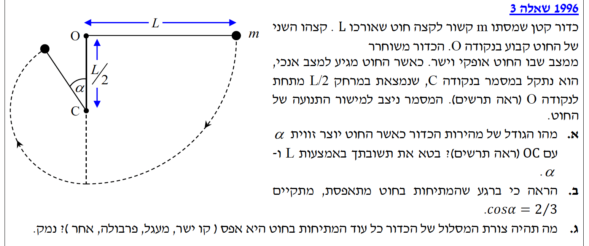
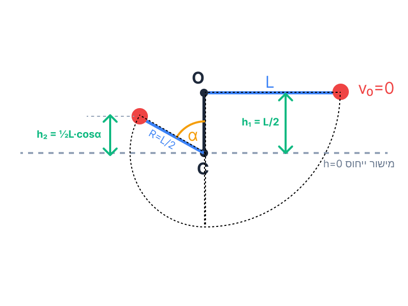
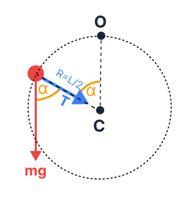

את גודל מהירות הכדור, \( v \), כאשר החוט יוצר זווית \( \alpha \) עם הציר האנכי (הקטע OC), מבוטא באמצעות המשתנים \( L \), \( \alpha \) וקבועים פיזיקליים כמו \( g \).
נשתמש בחוק שימור אנרגיה מכנית. הכוחות הפועלים על הכדור הם כוח הכובד (כוח משמר) ומתיחות החוט. המתיחות תמיד מאונכת לכיוון התנועה הרגעי, לכן היא לא מבצעת עבודה (העבודה של כוחות לא משמרים מתאפסת \( W_{nc} = 0 \)). לפיכך, האנרגיה המכנית הכוללת נשמרת.
נבחר את מישור הייחוס לאנרגיה הפוטנציאלית הכובדית (\( h = 0 \)) להיות בגובה של המסמר C. בחירה זו נוחה כיוון שהיא מאפשרת לנו לעבוד רק עם גבהים חיוביים.

מצב התחלתי (1): הכדור משוחרר ממנוחה (\( v_1 = 0 \)) בגובה נקודת התלייה O. ידוע כי המסמר C ממוקם במרחק \( \frac{L}{2} \) מתחת ל-O. לכן, ביחס למסמר, הגובה ההתחלתי של הכדור הוא \( h_1 = \frac{L}{2} \).
מצב סופי (2): החוט נתקע במסמר והכדור נע במעגל סביב C ברדיוס של \( R = \frac{L}{2} \). כאשר החוט יוצר זווית \( \alpha \) עם הציר האנכי כלפי מעלה, הגובה של הכדור מעל המסמר נתון על ידי הרכיב האנכי של הרדיוס, כלומר \( h_2 = R\cos\alpha = \frac{L}{2}\cos\alpha \).
נשווה את האנרגיות (\( E_1 = E_2 \)) על פי חוק שימור האנרגיה:
נעביר אגפים ונבודד את האיבר הכולל את המהירות \( v \):
נוציא גורם משותף \( mg\frac{L}{2} \) באגף ימין:
נצמצם במסה \( m \) (מותר כי \( m \neq 0 \)) ונכפול את שני האגפים ב-2:
קביעת נקודת הייחוס לאנרגיה פוטנציאלית כובדית (\( h=0 \)) בגובה של המסמר C הופכת את הפיתוח לאלגנטי וברור יותר, שכן אנו עובדים רק עם גבהים חיוביים מעל המסמר. כמובן שניתן היה לקבוע את גובה האפס במקום ההתחלתי (בנקודה O כפי שתלמידים רבים עושים אינסטינקטיבית), אך אז היינו נדרשים להתנהל מול גבהים שליליים (עומקים) לאורך כל המשוואה. התוצאה הסופית תהיה זהה לחלוטין בשתי הדרכים, וזה היופי של חוק שימור האנרגיה בפיזיקה!
להוכיח כי ברגע שהמתיחות בחוט מתאפסת, מתקיים הקשר \( \cos\alpha = \frac{2}{3} \).
הכדור נמצא בתנועה מעגלית (לא קצובה). ננתח את הכוחות הפועלים על הכדור בציר הרדיאלי (הציר הפונה אל מרכז המעגל, המסמר C). תאוצה רדיאלית תמיד מכוונת אל מרכז המעגל.

ניתוח גיאומטרי של הכוחות:
הכוח הרדיאלי שקול לפעולת המתיחות \( T \) ולרכיב הרדיאלי של כוח הכובד.
מכיוון שהזווית \( \alpha \) נמדדת בין החוט לקטע האנכי כלפי מעלה, הזווית בין כיוון כוח הכובד (כלפי מטה) לכיוון הרדיאלי הפונה אל מרכז המעגל היא גם \( \alpha \) (זוויות מתחלפות בין מקבילים - ראו תרשים).
לכן, הרכיב של כוח הכובד הפועל אל עבר מרכז המעגל הוא \( mg\cos\alpha \).
נרשום את החוק השני של ניוטון עבור הציר הרדיאלי (כיוון חיובי אל מרכז המעגל C):
ידוע שרדיוס המסלול הוא \( R = \frac{L}{2} \). נציב זאת במשוואה:
נחפש את הזווית בה המתיחות מתאפסת ונציב \( T = 0 \):
נציב את הביטוי ל- \( v^2 \) שמצאנו בסעיף א' (\( v^2 = gL(1 - \cos\alpha) \)):
נצמצם את המסה \( m \), את תאוצת הכובד \( g \), ואת האורך \( L \) משני האגפים:
נעביר את האיברים הכוללים \( \cos\alpha \) לאגף אחד:
זכרו! חוט יכול רק "למשוך" ולא "לדחוף". לכן המתיחות \( T \) תמיד חיובית או אפס. הרגע שבו \( T=0 \) הוא הרגע הקריטי שבו הכדור מפסיק להתנהג כאילו הוא מחובר לציר קשיח, והחוט נהיה רפוי. זה קורה מכיוון שרכיב כוח הכובד הפונה פנימה מספיק לבדו כדי לספק את התאוצה הרדיאלית הנדרשת למהירות הנוכחית.
לקבוע מה תהיה צורת המסלול של הכדור כל עוד המתיחות נשארת אפס, ולנמק את התשובה פיזיקלית.
ברגע שהמתיחות בחוט מתאפסת (\( T = 0 \)), החוט הופך לרפוי ואינו מפעיל יותר כוח על הכדור. המשמעות היא שמערכת הכוחות הפועלת על הכדור משתנה.
על פי החוק השני של ניוטון ננתח את הכוחות:
לכן, שקול הכוחות הפועל על הכדור הוא אך ורק כוח הכובד:
הכדור נע תחת השפעת תאוצה קבועה בגודלה ובכיוונה (תאוצת הנפילה החופשית כלפי מטה). יחד עם זאת, לכדור יש מהירות התחלתית (מרגע איפוס המתיחות) שאינה מקבילה לכיוון כוח הכובד (כיוון המהירות משיק למסלול המעגלי בנקודה ההיא, ולכן יוצר זווית עם האופק).
תנועה של גוף בעל מהירות התחלתית משופעת, הנמצא תחת השפעת כוח כובד בלבד, מוגדרת כזריקה משופעת. מסלול קינמטי של זריקה משופעת (תנועה שוות מהירות בציר האופקי, ותנועה שוות תאוצה בציר האנכי) הוא תמיד פרבולה.
טעות נפוצה היא לחשוב שהכדור ישר ייפול למטה או ימשיך במעגל. ברגע שאין כוח שמאלץ אותו להישאר במסלול מעגלי, והוא באוויר עם מהירות כיוונית - חוקי הקינמטיקה הבסיסיים לוקחים פיקוד. זה בדיוק כמו לזרוק אבן באוויר בזווית!